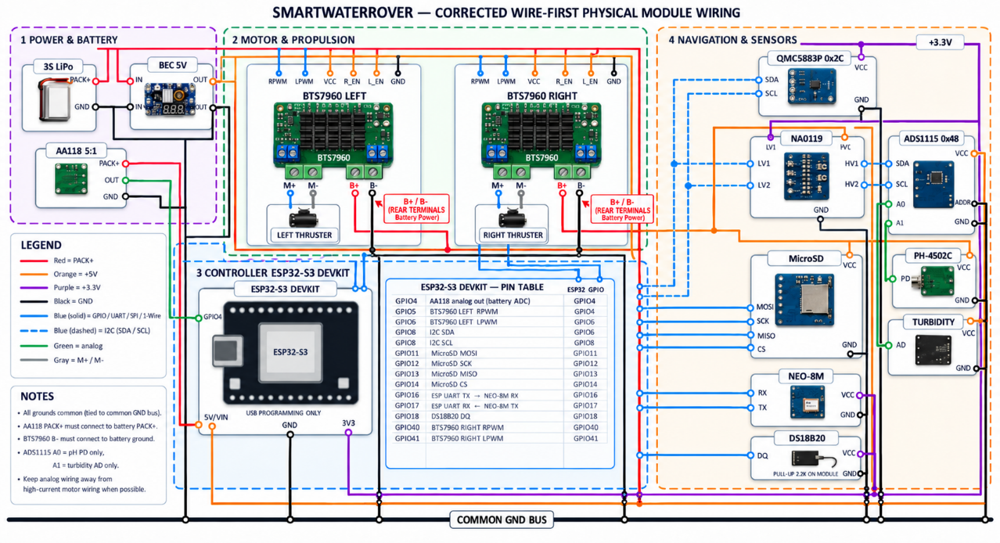

Temperature
DS18B20
A waterproof temperature probe measures water temperature. The backend represents the reading as temp_c.
03 / Water sensing
The boat measures temperature, pH and turbidity. Navigation sensors and the controller attach those water readings to a position and a mission state.
Temperature
A waterproof temperature probe measures water temperature. The backend represents the reading as temp_c.
Acidity / alkalinity
The analog pH sensor reports the water’s pH level. The backend stores the value as ph_level.
Water clarity
The analog sensor measures turbidity for alert checks and spatial mapping. The backend uses turbidity_ntu.
The report does not provide sensor accuracy figures or calibration coefficients. Measurement quality depends on calibration and environmental conditions.
Navigation and data support

From sensor to record
The telemetry model can pair sensor values with latitude, longitude, battery, heading and mission mode. The web map and history can then show what was measured and where the boat was operating.